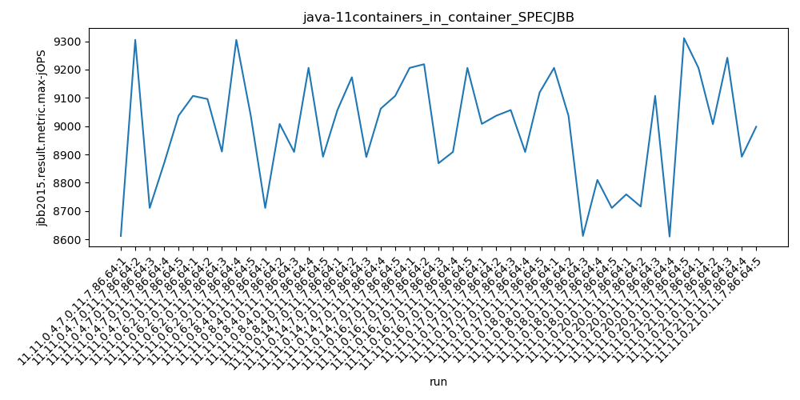
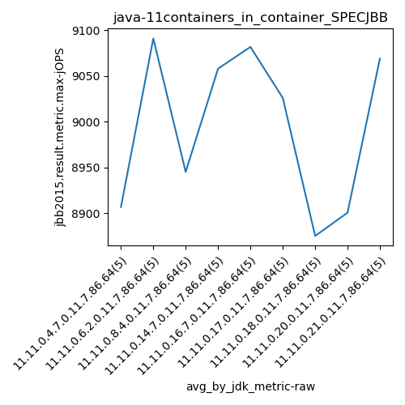
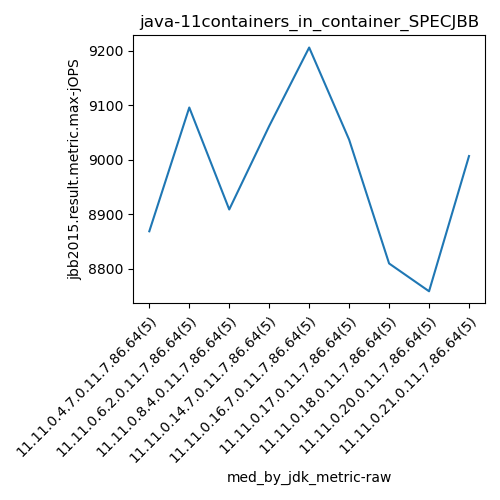
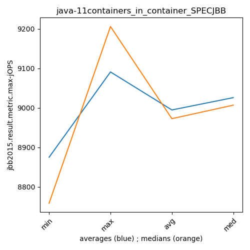
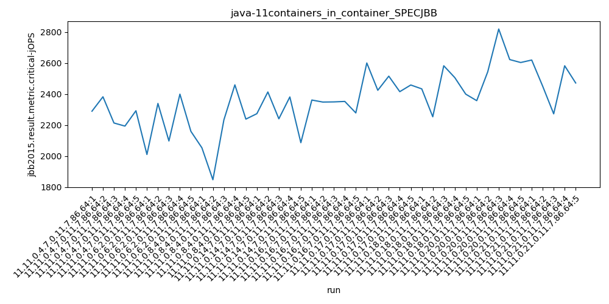
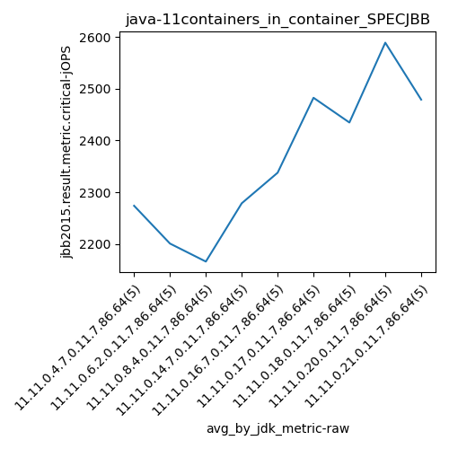
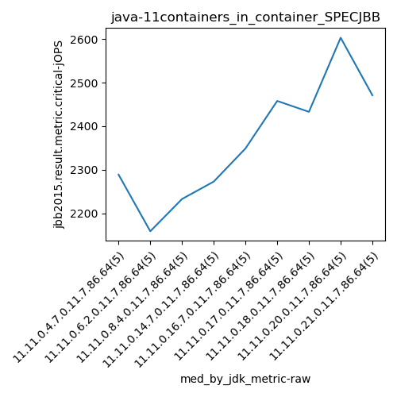
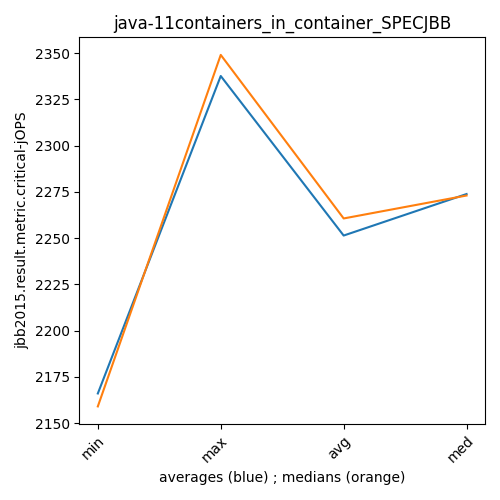

java-11 SPECJBB
Context at bottom
/home/jvanek/git/benchmarks-in-nested-virtualisation-toolchain/final_results/containers_in_container_results/containers_in_container_DACAPO
java-11
SPECJBB
/home/jvanek/git/benchmarks-in-nested-virtualisation-toolchain/final_results/containers_in_container_results/containers_in_container_JMH
java-11
SPECJBB
/home/jvanek/git/benchmarks-in-nested-virtualisation-toolchain/final_results/containers_in_container_results/containers_in_container_SPECJBB
java-11
SPECJBB
containers_in_container_SPECJBB
- containers_in_container_SPECJBB - max-jops
- containers_in_container_SPECJBB - critical jops
containers_in_container_SPECJBB - max-jops
Expected number of java-11 JDKs: 11
1st avgmed_alljdks_metric:
/home/jvanek/git/benchmarks-in-nested-virtualisation-toolchain/final_results/result_processing.py /home/jvanek/git/benchmarks-in-nested-virtualisation-toolchain/final_results/containers_in_container_results/containers_in_container_SPECJBB jbb2015.result.metric.max-jOPS False
values: [8612, 9305, 8711, 8869, 9037, 9107, 9096, 8910, 9305, 9037, 8711, 9008, 8909, 9206, 8892, 9057, 9173, 8891, 9062, 9107, 9206, 9219, 8869, 8909, 9206, 9008, 9037, 9057, 8909, 9119, 9206, 9037, 8612, 8810, 8711, 8759, 8716, 9107, 8610, 9311, 9206, 9007, 9242, 8892, 8998]

Expected number of iterations: 5
final number of values: 45 out of 55
Pass rate: 81.8%
values: (8610, 9311, 8994.844444444445, 9037)

** accuracy from all jdks and runs
more is better
MIN: 8610
MAX: 9311
AVG: 8994.844444444445
MED: 9037
Relative differences 1:
MIN-MAX: 8.0 %
MIN-AVG: 4.0 %
MIN-MED: 5.0 %
MAX-MIN: -8.0 %
MAX-AVG: -4.0 %
MAX-MED: -3.0 %
AVG-MED: 0.0 %
stored to java-11.properties. sort | uniq that!
2nd avgmed_by_jdk_metric:
values: [8906.8, 9091.0, 8945.2, 9058.0, 9081.8, 9026.0, 8875.2, 8900.6, 9069.0]

values: [8869, 9096, 8909, 9062, 9206, 9037, 8810, 8759, 9007]

values: (8875.2, 9091.0, 8994.844444444445, 9026.0)
values: (8759, 9206, 8972.777777777777, 9007)

** accuracy from all jdks where runs were avged
more is better
MIN: 8875.2
MAX: 9091.0
AVG: 8994.844444444445
MED: 9026.0
Relative differences 1:
MIN-MAX: 2.0 %
MIN-AVG: 1.0 %
MIN-MED: 2.0 %
MAX-MIN: -2.0 %
MAX-AVG: -1.0 %
MAX-MED: -1.0 %
AVG-MED: 0.0 %
stored to java-11.properties. sort | uniq that!
** accuracy from all jdks where runs were medianed
more is better
MIN: 8759
MAX: 9206
AVG: 8972.777777777777
MED: 9007
Relative differences 1:
MIN-MAX: 5.0 %
MIN-AVG: 2.0 %
MIN-MED: 3.0 %
MAX-MIN: -5.0 %
MAX-AVG: -3.0 %
MAX-MED: -2.0 %
AVG-MED: 0.0 %
stored to java-11.properties. sort | uniq that!
containers_in_container_SPECJBB - critical jops
Expected number of java-11 JDKs: 11
1st avgmed_alljdks_metric:
/home/jvanek/git/benchmarks-in-nested-virtualisation-toolchain/final_results/result_processing.py /home/jvanek/git/benchmarks-in-nested-virtualisation-toolchain/final_results/containers_in_container_results/containers_in_container_SPECJBB jbb2015.result.metric.critical-jOPS False
values: [2289, 2382, 2213, 2193, 2292, 2010, 2339, 2097, 2399, 2159, 2053, 1847, 2233, 2459, 2238, 2273, 2413, 2240, 2381, 2086, 2361, 2348, 2349, 2352, 2278, 2600, 2424, 2515, 2415, 2458, 2433, 2253, 2582, 2506, 2399, 2357, 2543, 2819, 2622, 2603, 2619, 2450, 2272, 2582, 2471]

Expected number of iterations: 5
final number of values: 45 out of 55
Pass rate: 81.8%
values: (1847, 2819, 2360.1555555555556, 2361)

** accuracy from all jdks and runs
more is better
MIN: 1847
MAX: 2819
AVG: 2360.1555555555556
MED: 2361
Relative differences 1:
MIN-MAX: 34.0 %
MIN-AVG: 22.0 %
MIN-MED: 22.0 %
MAX-MIN: -53.0 %
MAX-AVG: -19.0 %
MAX-MED: -19.0 %
AVG-MED: 0.0 %
stored to java-11.properties. sort | uniq that!
2nd avgmed_by_jdk_metric:
values: [2273.8, 2200.8, 2166.0, 2278.6, 2337.6, 2482.4, 2434.6, 2588.8, 2478.8]

values: [2289, 2159, 2233, 2273, 2349, 2458, 2433, 2603, 2471]

values: (2166.0, 2588.8, 2360.1555555555556, 2337.6)
values: (2159, 2603, 2363.1111111111113, 2349)

** accuracy from all jdks where runs were avged
more is better
MIN: 2166.0
MAX: 2588.8
AVG: 2360.1555555555556
MED: 2337.6
Relative differences 1:
MIN-MAX: 16.0 %
MIN-AVG: 8.0 %
MIN-MED: 7.0 %
MAX-MIN: -20.0 %
MAX-AVG: -10.0 %
MAX-MED: -11.0 %
AVG-MED: -1.0 %
stored to java-11.properties. sort | uniq that!
** accuracy from all jdks where runs were medianed
more is better
MIN: 2159
MAX: 2603
AVG: 2363.1111111111113
MED: 2349
Relative differences 1:
MIN-MAX: 17.0 %
MIN-AVG: 9.0 %
MIN-MED: 8.0 %
MAX-MIN: -21.0 %
MAX-AVG: -10.0 %
MAX-MED: -11.0 %
AVG-MED: -1.0 %
stored to java-11.properties. sort | uniq that!
/home/jvanek/git/benchmarks-in-nested-virtualisation-toolchain/final_results/containers_in_container_results/containers_in_container_RADARGUNs1
java-11
SPECJBB
/home/jvanek/git/benchmarks-in-nested-virtualisation-toolchain/final_results/containers_in_container_results/containers_in_container_J2DBENCH
java-11
SPECJBB
/home/jvanek/git/benchmarks-in-nested-virtualisation-toolchain/final_results/containers_in_container_results/containers_in_container_RADARGUNs3
java-11
SPECJBB
pass rates:
containers_in_container_SPECJBB=81.8%
Context:
- containers_in_container_results
- SPECJBB